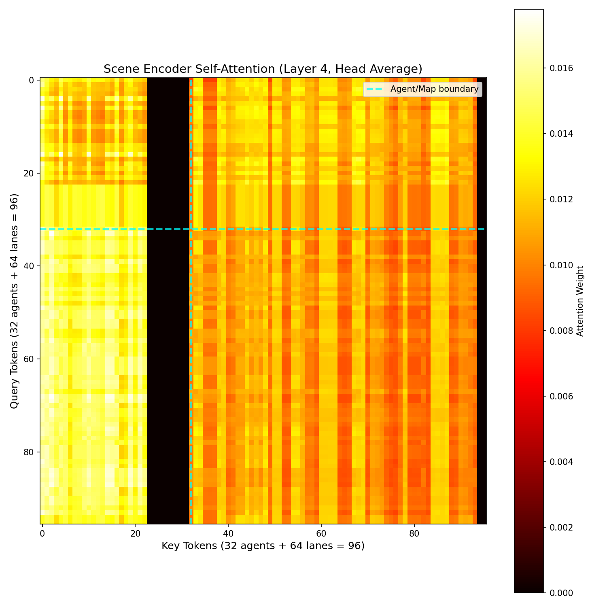
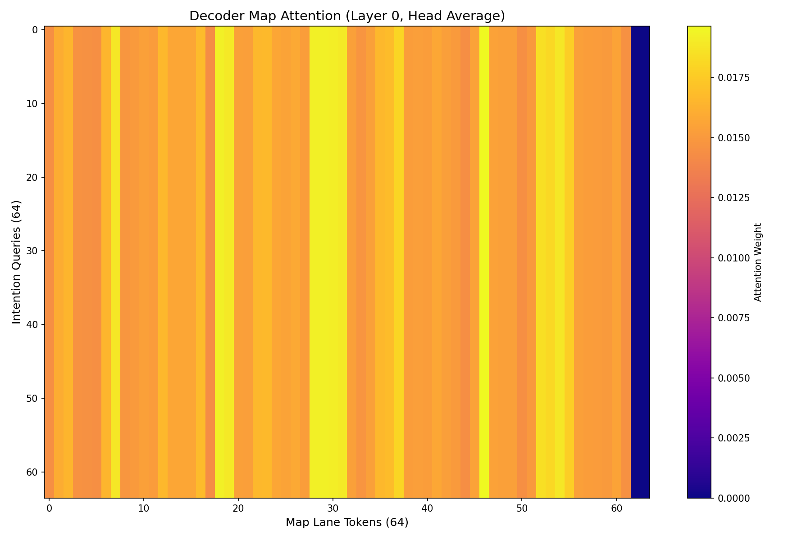
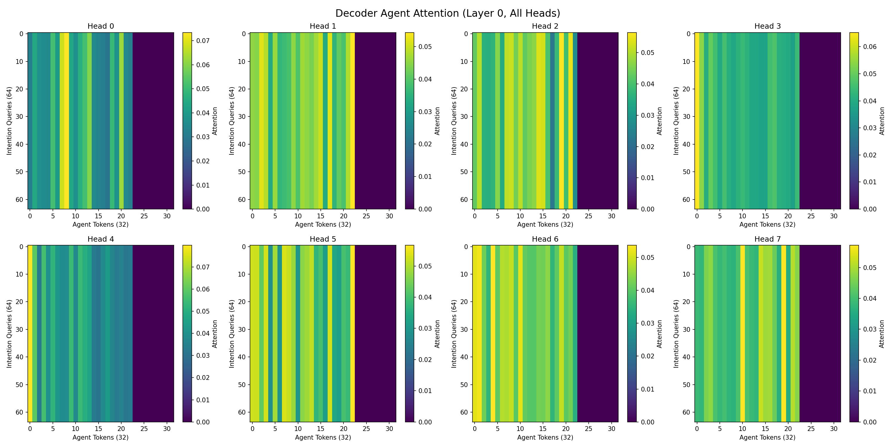

Abstract
While Transformer-based models have achieved state-of-the-art prediction performance,
their internal attention mechanisms remain opaque. We present a spatial attention
visualization framework that maps abstract Transformer attention weights onto
bird’s-eye-view (BEV) traffic scenes, providing the first spatially grounded
interpretation of attention in trajectory prediction. Built upon MTR-Lite
(8.48M parameters) trained on the Waymo Open Motion Dataset, our framework employs a novel
spatial token bookkeeping mechanism. We discover that vulnerable road users
(pedestrians and cyclists) receive up to 60% less attention than vehicles
at equivalent distances — a safety blind spot. We further introduce
counterfactual attention analysis to isolate the causal effect of
individual scene elements on model attention.
60%
VRU Attention Deficit
30%
Pruning w/o Degradation
8.48M
MTR-Lite Parameters
Method
Framework Overview
Our visualization framework consists of three components built on top of an MTR-Lite
Transformer trained on the Waymo Open Motion Dataset (20% subset, ~17,800 scenes):
-
Attention-Capture Layers — Custom Transformer layers that extract
per-head attention weight matrices from every encoder and decoder layer without altering predictions
-
Spatial Token Bookkeeping — A bidirectional mapping between abstract
token indices and physical BEV coordinates, enabling projection of attention weights onto the traffic scene
-
Three Visualization Types — Space-attention BEV heatmaps (where),
time-attention refinement diagrams (how attention evolves across layers),
and lane-token activation maps (which road structures guide prediction)
MTR-Lite Architecture
A lightweight Motion Transformer variant with 4 encoder layers (global self-attention over
32 agent + 64 map tokens), 4 decoder layers (agent cross-attention + map cross-attention),
and 64 intention queries refined into K=6 output modes via NMS. Trained for 60 epochs
on Waymo with AdamW, cosine annealing, and mixed-precision training.
Counterfactual Experiments
By directly editing scene dictionaries (removing agents, flipping traffic signals, injecting
pedestrians at varying distances), we perform the first counterfactual attention
analysis for trajectory prediction — enabling causal (not just correlational)
claims about how scene elements influence model reasoning.
Attention Visualizations

Scene encoder self-attention (Layer 4). The cyan boundary separates
32 agent tokens (left/top) from 64 map tokens (right/bottom). Agent-agent attention
(top-left quadrant) is notably stronger than agent-map attention.

Decoder map cross-attention (Layer 0). Each row is an intention query attending
to 64 lane tokens. Vertical striping reveals that certain lanes attract attention from
all queries — likely the ego agent’s current and target lanes.

Decoder agent cross-attention decomposed by attention head.
Different heads specialize in different aspects: some focus on the ego agent,
others attend broadly to nearby traffic participants.
Key Findings
1. VRU Safety Blind Spot
Pedestrians and cyclists receive up to 60% less attention than vehicles
at equivalent distances. This systematic under-attendance represents a safety-critical
blind spot in current Transformer architectures, with direct implications for collision risk
with vulnerable road users.
2. Progressive Attention Focusing
Entropy decreases from ~5.2 bits (Layer 0) to ~2.8 bits (Layer 3), confirming that
early layers perform broad scene surveying while late layers focus on task-relevant elements.
Late-layer sparsity enables ~30% computational pruning with <1% minADE@6 degradation.
3. Attention is Causally Reactive
Counterfactual experiments confirm that attention adapts when scene elements change —
it reflects genuine reasoning about current context, not memorized patterns.
When an agent is removed, freed attention flows preferentially to the next most relevant
element (target lane or next-closest agent), revealing a learned priority hierarchy.
4. Safety Certification Implications
The framework provides three types of evidence relevant to the EU AI Act and NHTSA
testing frameworks: spatial evidence (BEV overlays), causal evidence (counterfactual experiments),
and quantitative thresholds (e.g., minimum VRU attention threshold of 0.3 for collision avoidance).
Citation
@article{zhou2026attnviz,
title={Spatial Attention Visualization for Interpretable Trajectory Prediction in Autonomous Driving: Discovering Safety Blind Spots Through Counterfactual Analysis},
author={Zhou, Xingnan and Alecsandru, Ciprian},
journal={Sustainability},
year={2026},
publisher={MDPI}
}